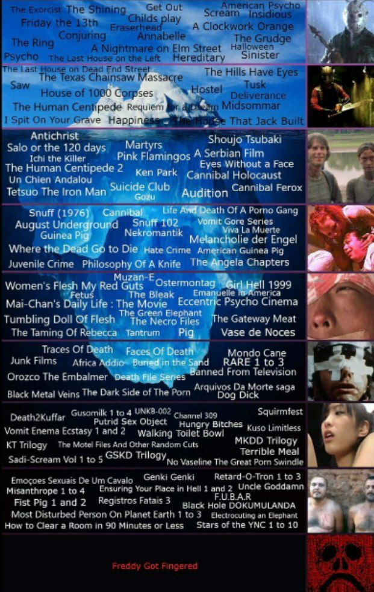

2021-07-04_01-11-32_p22.jpg


Extracted names
- ! PORTATO — Arancia meccanica
- ! PORTATO — Nightmare - Dal profondo della notte
- ! PORTATO — A Serbian Film
- ! PORTATO — Annabelle
- ! PORTATO - Lars von Trier — Antichrist
- ! PORTATO - Audition
- ! PORTATO — Cannibal Ferox
- ! PORTATO — Cannibal Holocaust
- ! PORTATO — Un tranquillo weekend di paura
- ! PORTATO — Occhi senza volto
- ! PORTATO — Freddy Got Fingered
- ! PORTATO — Venerdì 13 (film 1980)
- ! PORTATO - Get Out
- ! PORTATO — Halloween - La notte delle streghe
- ! PORTATO - Hereditary
- ! PORTATO — La casa dei 1000 corpi
- ! PORTATO — Non violentate Jennifer
- ! PORTATO — Ken Park
- ! PORTATO — Martyrs (film 2008)
- ! PORTATO — Midsommar - Il villaggio dei dannati
- ! PORTATO — Mondo cane
- ! PORTATO — Nekromantik
- ! PORTATO — Orozco the Embalmer
- ! PORTATO — Philosophy of a Knife
- ! PORTATO - Pink Flamingos
- ! PORTATO — Psycho
- ! PORTATO - Requiem for a Dream
- ! PORTATO — Salò o le 120 giornate di Sodoma
- ! PORTATO — Scream
- ! PORTATO — Midori - La ragazza delle camelie
- ! PORTATO — Sinister
- ! PORTATO — Snuff (film 1976)
- ! PORTATO — Suicide Club
- ! PORTATO - Shinya Tsukamoto — Tetsuo - The Iron Man
- ! PORTATO — L’evocazione - The Conjuring
- ! PORTATO — L’esorcista
- ! PORTATO — The Green Elephant
- ! PORTATO — The Grudge (film 2004)
- ! PORTATO — Le colline hanno gli occhi (film 1977)
- ! PORTATO - Lars von Trier — La casa di Jack
- ! PORTATO — The Human Centipede (First Sequence)
- ! PORTATO — The Human Centipede 2 (Full Sequence)
- ! PORTATO — Last House on Dead End Street
- ! PORTATO — L’ultima casa a sinistra (film 1972)
- ! PORTATO — The Ring (film 2002)
- ! PORTATO — Non aprite quella porta
- ! PORTATO — Tusk (film 2014)
- ! PORTATO — Un cane andaluso
- ! PORTATO — Vase de noces
- ! PORTATO — Viva la muerte
Needs review
Lower iceberg contains many small, distorted labels and compilation names; remaining titles cannot be reliably transcribed. Some films have ambiguous versions.
OCR transcription
Machine transcription for checking; spelling and reading order can be wrong.
-The
Cet ou
Scream
A CIOCkwork Orange
Friday thè 13tn
Conjuring Annabellé
The Grudge
The Ring
A Nightmare on Elm Street Halloween
Psycho The Last House on the Left Hereditary Sinister
étast*use on Dead rnd Street
The Hills Have Eye;
ne Texas Chansaw
Tusk
House of
Deliverance
The Human Ce#pedë Reque,rri
I Spit On Your Grave Hap i
Anti Christ
Salo or the 120 days; Martyrs
Midsomrnar
That Jack Bui't
Shoujo Tsubaki
A Serbian Film
Pink Flamingos
the Killer
Eyes Wlthout a Face
The Human Centipede 2 Ken park 1Cannibal Holocaust
un Chm Andalou "
' Suicide Club
Cannibal Ferox
Tetsuo The Iron Man
i A%dition
bfe —ath Of A porno osng
¯snuff ( 19761
Gore Senes
August Unde"o d Sn
Vè-.•a La Muerte
Nekr9mantik
Guinea p-
M&nçholie der Engel
Where
to Die te Cnme Am«ican Guinea Pig
Juvenile Crime PhilosophyOf A Knife The.gela Chapters
Muzan-E
Women•s FI*I M! Red Guts
1 1999
The Bleak Erna
Mai-Chanis Life : The Movie Eccen Psycho Cinema
ne Green wepnant
Tumbling Doll Of Flesh , The Necro Files
he Gateway Meat
The Taminq Of , Tantrum Vase de Noces
Traces Of •'Faed'Ofbea
Mondo Cane
Junk Films Africa
RARE 1 to 3
inth•
nned From Television
Orozco The Embalmer
Arquivos Da estorte saga
Black Metal Veins The Dark Side of The Porn
Dog DiC
Squirmfest
Ciwtnel 309
Death2Kuffar
putrid Sex Object H unçrv Bitches
Vomit Enema Ecstasy 1 and 2 Walking Toilet Bowl
MKDD Trilogy
KT Trilogy Files And Other Random Cuts
Terrible Meal
GSKD Triloqy
Sadi-Scream VOI 1 to S
NO Wseline The Great porn Swindle
GenkiGenki Retard-O-Tron 1 to 3
M Isanthrope 1 4 Ensurirg in Hell and 2 n
Fist Pig 1 and 2 Reg.strosFatais 3
Back Hoee DOKUMULANDA
On Planet 3 • n
How to Clear a Room in 90 Minutes or Less Stars of the YNC i to iO
Freddy Goc Fenqered